Отчёт по лабораторной работе №1
Пункт 1. Подключение к серверу с помощью PuTTy
Что происходит: На скриншоте изображено окно настройки программы PuTTY для подключения к учебному серверу по протоколу SSH (Secure Shell).
- Host Name (или IP-адрес):
kubsu-dev.ru– доменное имя сервера, к которому мы подключаемся. - Port:
58528– нестандартный порт, выданный преподавателем (по умолчанию SSH использует порт 22). - Connection type: выбран SSH – это тип соединения, обеспечивающий шифрование всех передаваемых данных (логин, пароль, команды).
После нажатия кнопки Open PuTTY установит TCP-соединение с сервером kubsu-dev.ru:58528 и запустит сеанс SSH, запросив логин (u82686) и пароль. Это первый шаг для выполнения всех последующих команд в лабораторной работе.
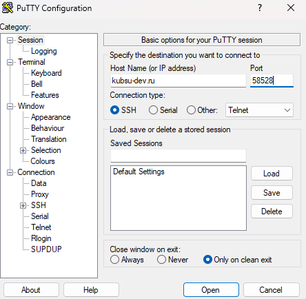
Скриншот 1.1: Программа PuTTy и данные для подключения к учебному серверу
Результат: Успешно открылась консоль Putty, позволяющая взаимодейсвовать с учебным сервером. Скриншот запечатлел момент после успешного входа на учебный сервер по SSH. Здесь показан процесс аутентификации и приветственное сообщение системы.
- Строка входа: пользователь ввёл логин
u82686, затем система запросила пароль (сам пароль не отображается в целях безопасности). После ввода правильного пароля доступ был предоставлен. - Приглашение командной строки: внизу видна строка
u82686@web-server:~$– это означает, что пользовательu82686работает на сервереweb-server, текущий каталог — домашний (~), и система ожидает ввода команд.
Таким образом, скриншот подтверждает, что соединение с сервером установлено, аутентификация пройдена, и пользователь готов к выполнению дальнейших заданий (ping, nslookup, whois и т.д.).
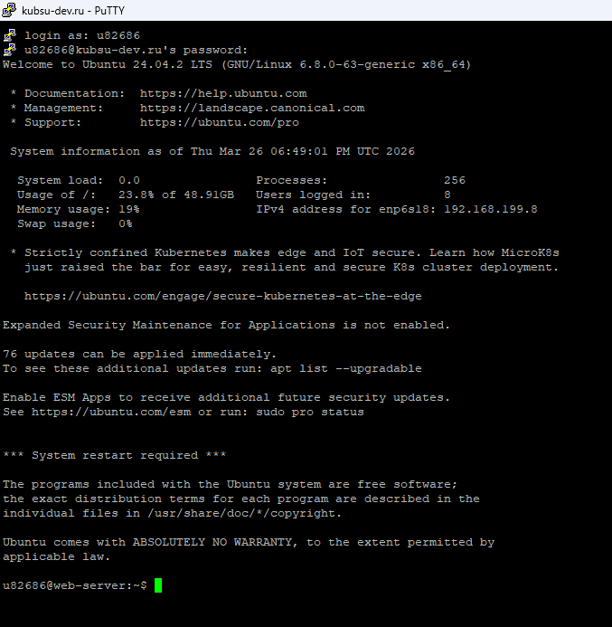
Скриншот 1.2: Консоль PuTTy после успешной авторизации
Пункт 2. Определение IP-адреса веб-сервера kubsu.ru
ping -c 4 kubsu.ru
Что делает: Утилита ping отправляет ICMP-запросы на указанный узел и измеряет время ответа. Опция -c 4 ограничивает количество запросов четырьмя.
Результат: В первой строке вывода виден IP-адрес сервера 185.13.84.92. Все 4 пакета успешно дошли (потеря 0%), среднее время ответа составило 1.035 мс.
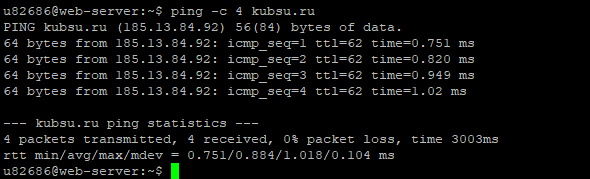
Скриншот 2: ping kubsu.ru (файл PUTTY2.png)
Пункт 3.1. A-запись домена kubsu.ru
nslookup -type=A kubsu.ru
Что делает: Запрашивает у DNS-сервера адресную запись (A-запись) для домена, которая связывает имя с IPv4-адресом.
Результат: Домену kubsu.ru соответствует IP-адрес 185.13.84.92 (неавторитативный ответ, но корректный).
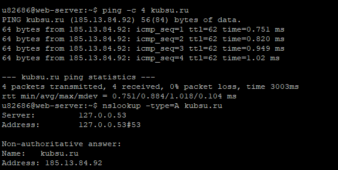
Скриншот 3.1: nslookup A kubsu.ru (файл PUTTY31.png, вторая команда)
Пункт 3.2. MX-запись домена kubsu.ru
nslookup -type=MX kubsu.ru
Что делает: Запрашивает MX-записи домена — они указывают, какие почтовые серверы обслуживают домен и с каким приоритетом (чем меньше число, тем выше приоритет).
Результат: Для kubsu.ru получены три почтовых сервера:
- приоритет 10: mx2.kubannet.ru
- приоритет 20: mx.kubannet.ru
- приоритет 50: mx.kubsu.ru
Основной почтовый сервер — с наименьшим приоритетом (10).
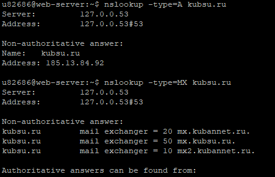
Скриншот 3.2: nslookup MX kubsu.ru (файл PUTTY32.png, нижняя часть)
Пункт 3.3. A-запись домена kubsu-dev.ru
nslookup -type=A kubsu-dev.ru
Что делает: Запрос A-записи для домена kubsu-dev.ru.
Результат: Домену kubsu-dev.ru соответствует IP-адрес 212.192.134.135.
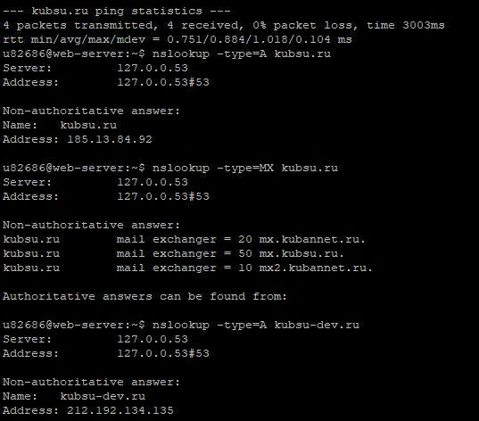
Скриншот 3.3: nslookup A kubsu-dev.ru (файл PUTTY33.png, третья команда сверху)
Пункт 3.4. MX-запись домена kubsu-dev.ru
nslookup -type=MX kubsu-dev.ru
Что делает: Запрос MX-записей для kubsu-dev.ru.
Результат: Для домена kubsu-dev.ru не найдено MX-записей (ответ "No answer"). Это означает, что домен не имеет собственных почтовых серверов. Однако в авторитативном ответе указаны DNS-серверы, обслуживающие домен:
- origin: nsl.nameself.com
- mail addr: support.regtime.net
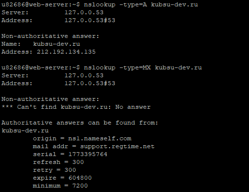
Скриншот 3.4: nslookup MX kubsu-dev.ru (файл PUTTY34.png)
Пункт 4.1. Дата регистрации домена kubsu.ru
whois kubsu.ru
Что делает: Утилита whois запрашивает регистрационные данные домена из базы данных регистратора.
Результат: В выводе найдена строка created: 1998-03-28T12:18:30Z. Это означает, что домен kubsu.ru зарегистрирован 28 марта 1998 года. Срок действия оплачен до 30 апреля 2026 года.
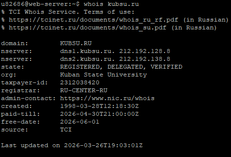
Скриншот 4.1: whois для kubsu.ru (файл PUTTY41.png)
Пункт 4.2. Дата регистрации домена kubsu-dev.ru
whois kubsu-dev.ru
Что делает: Запрос регистрационных данных для kubsu-dev.ru.
Результат: Домен kubsu-dev.ru зарегистрирован 12 февраля 2020 года (строка created: 2020-02-12T15:55:06Z). Срок действия оплачен до 12 февраля 2027 года.
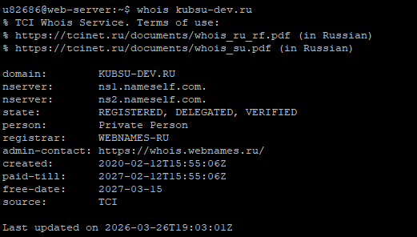
Скриншот 4.2: whois для kubsu-dev.ru (файл PUTTY42.png)
Пункт 5. Создание веб-страницы и размещение в git-репозитории
5.1. Подготовка локального репозитория
На локальном компьютере была создана папка lAB1, в которую помещены все скриншоты, сделанные ранее (пункты 1–4), и файл index.html для отчёта.

Скриншот 5.1: Создание папки на локальном компьюере и размещщение скриншотов и главной страницы
5.2. Создание файла index.html
Был создан файл index.html с базовой структурой HTML, включающей заголовки и ссылки на все скриншоты.
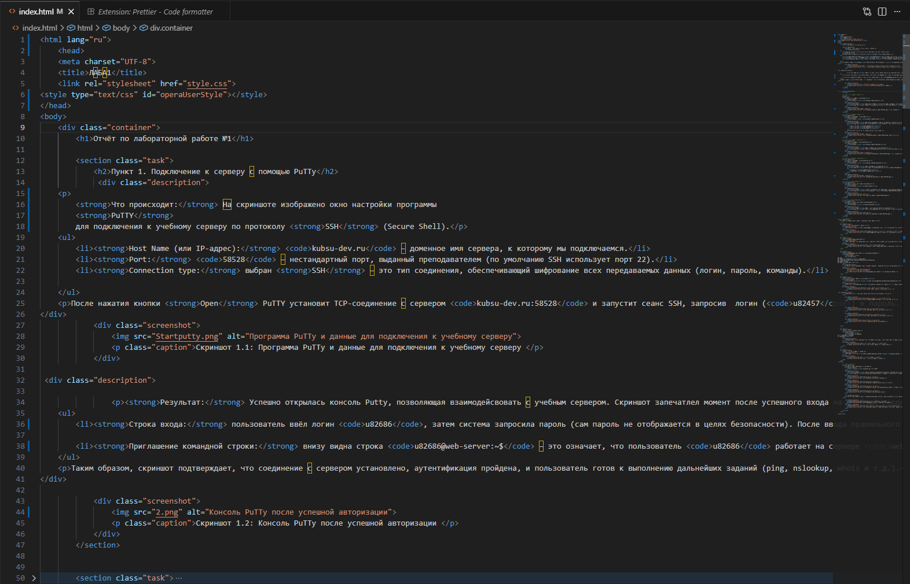
Скриншот 5.2: Создание структуры файла index.html и размещение скриншотов на странице
5.3. Инициализация git-репозитория и загрузка на GitHub
Репозиторий был инициализирован, все файлы добавлены, создан первый коммит, установлена связь с удалённым репозиторием на GitHub, и изменения отправлены.
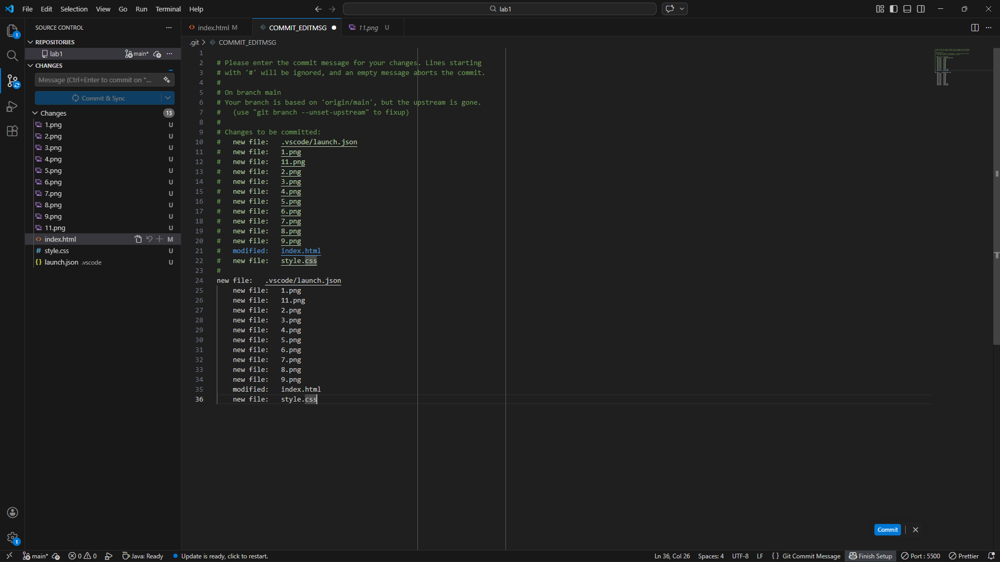
Скриншот 5.3: Инициализация git-репозитория и загрузка на GitHub
5.4. Клонирование репозитория на учебный сервер
git clone https://github.com/themisato/Lab1.git
На сервере kubsu-dev.ru через SSH был выполнен клон репозитория, что создало локальную копию в домашней директории пользователя.
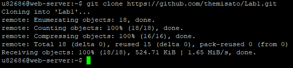
Скриншот 5.4.1: Клонирование репозитория на учебный сервер
Собственно говоря, сам процесс подключения ssh ключа для учебного сервера:
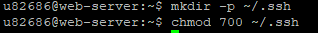
Скриншот 5.4.2: Создание папки на учебном сервере для SSH ключа
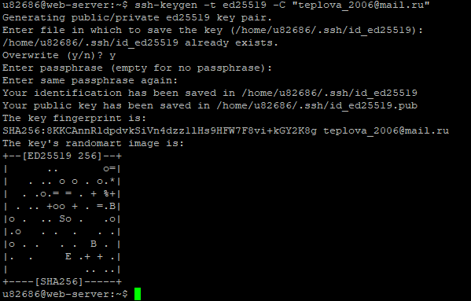
Скриншот 5.4.3: Генерация SSH ключа на учебном сервере
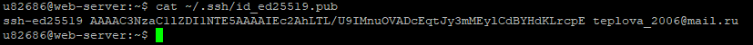
Скриншот 5.4.4: Копирование SSH ключа на учебном сервере
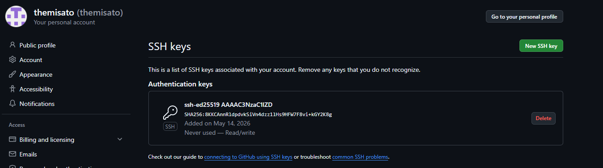
Скриншот 5.4.5: Добавление SSH ключа на GitHub
5.5. Перенос в каталог www
mkdir -p ~/www/LAB1
cp -r ~/Lab1/* ~/www/LAB1/
ls ~/www/LAB1/Создан каталог ~/www/LAB1 (доступный через веб), в него скопированы все файлы из клонированного репозитория. Команда ls подтверждает наличие файлов.
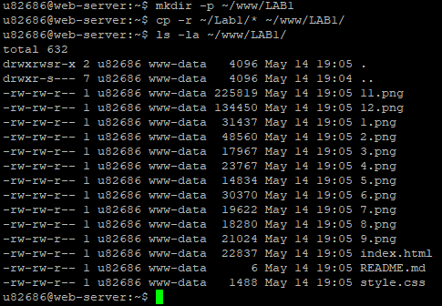
Скриншот 5.5: Перенос клона репозитория в каталог www
5.6. Проверка доступа к странице:
В браузере открыт адрес http://u82686.kubsu-dev.ru/LAB1/
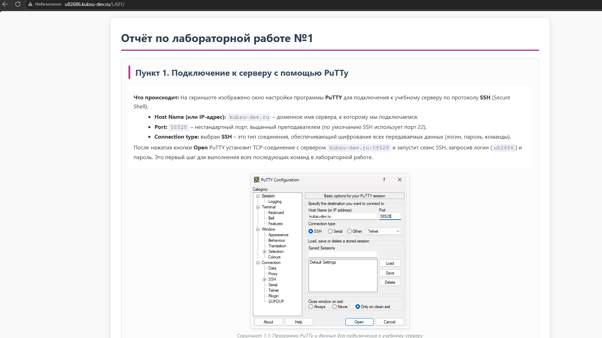
Скриншот 5.6: Проверка доступа к странице
Пункт 6. Копирование файлов через SFTP
Что делает: Клиент FileZilla устанавливает защищённое соединение по протоколу SFTP с сервером kubsu-dev.ru (порт YYYYY) под логином u82686. После подключения файлы из каталога ~/www/LAB1 были скопированы на локальный компьютер.
Результат: На локальной машине появились все файлы отчёта(скриншоты и index.html), что подтверждает скриншот интерфейса FileZilla.
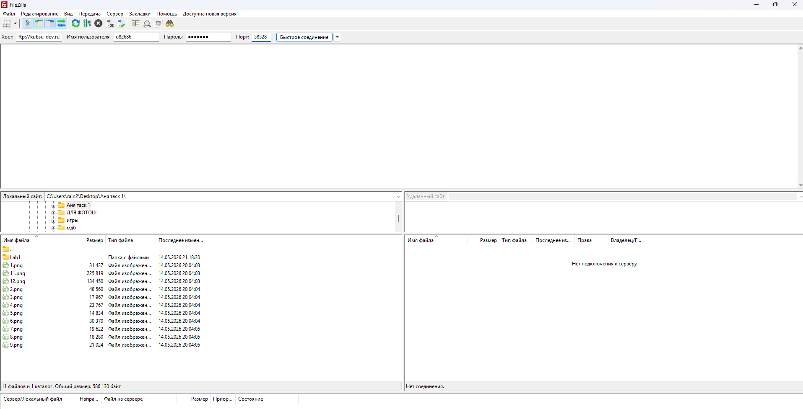
Скриншот 6.1: FileZilla – установка соединения
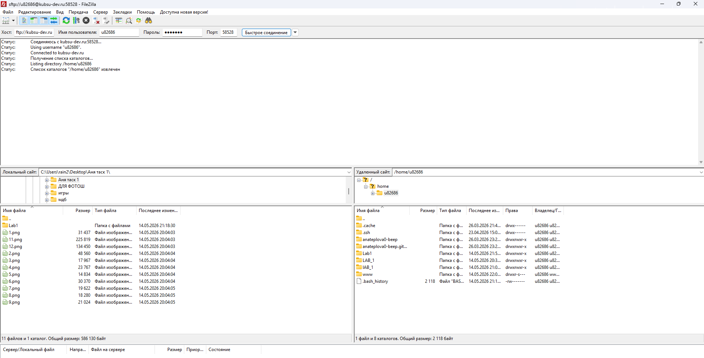
Скриншот 6.2: FileZilla – успешное подключение к серверу
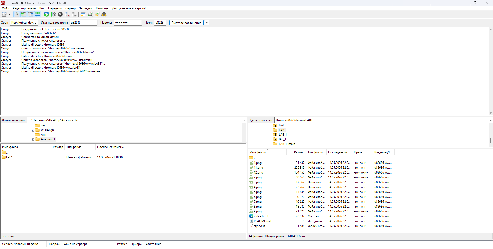
Скриншот 6.3: FileZilla – начало скачивания(передачи) файлов с учебного сервера на локальный компьютер
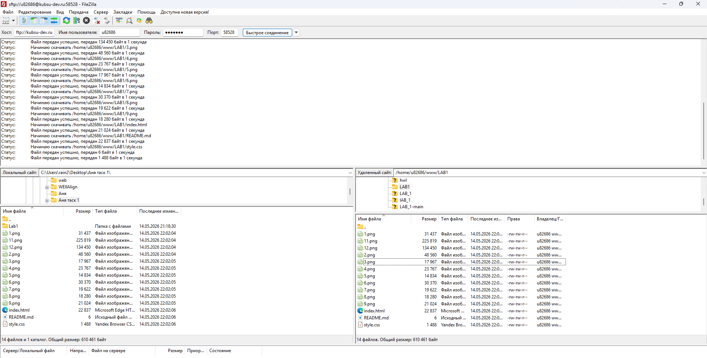
Скриншот 6.4: FileZilla – передача завершена
После того как сделали скриншоты в FileZilla подгрузили их на гит, затем на учебном сервере обновили репозиторий гита

Скриншот 6.5: Добавление скринов с FileZilla в Git hub

Скриншот 6.6: Обновление главной страницы на учебном сервере(гит репозитория)